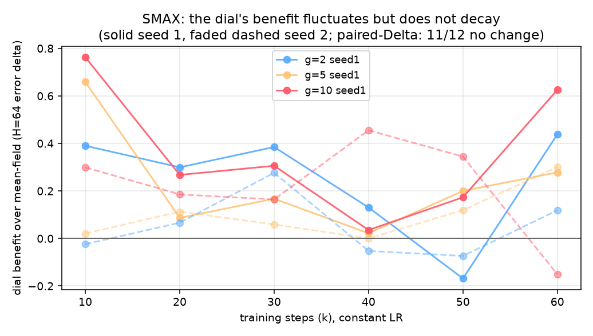
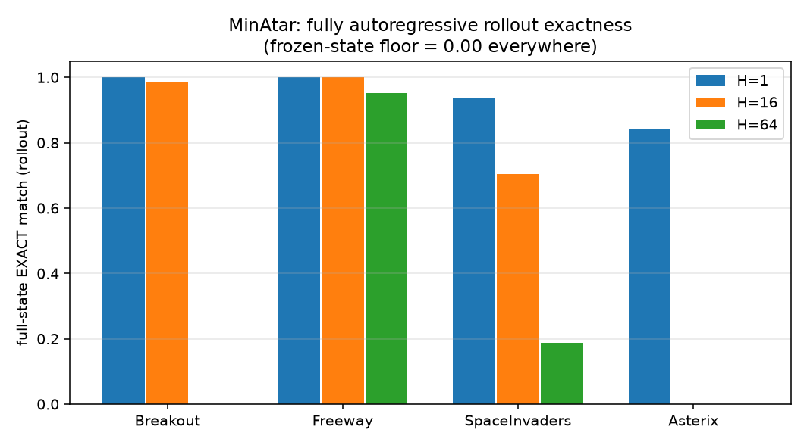
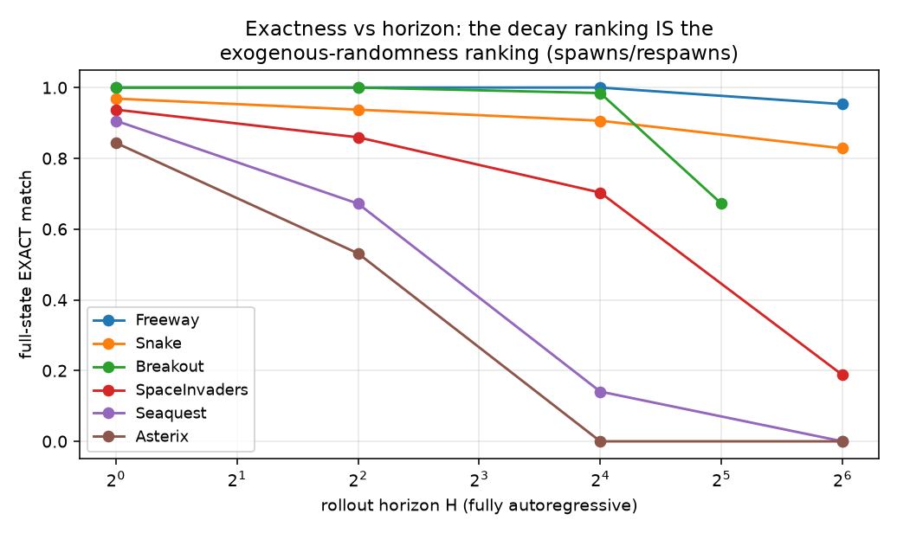
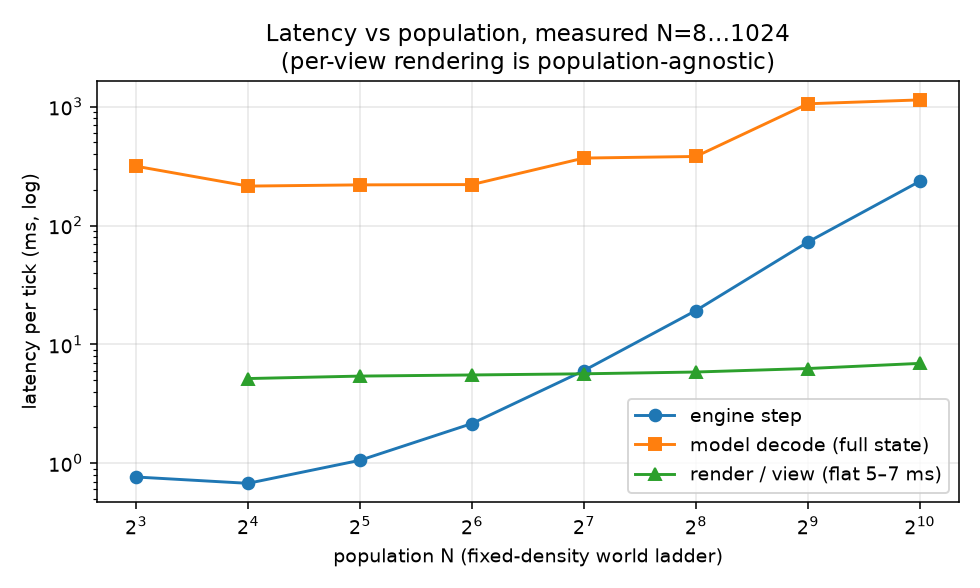

The question under systematic study: if the engine's authoritative typed state is the right interface for world models, can it serve as a unified simulation interface — cross-environment, plannable, renderable? The starting point is MASS (arXiv 2608.06257), whose per-record factorisation is a mean-field approximation that breaks exactly on contested outcomes; we add a dial from mean-field to fully joint decoding (C1), a Joint Contradiction Rate that counts cross-record impossibilities (JCR), and sampled exogenous randomness (C5).
Scope, stated precisely. What the 21 environments validate today is a unified pipeline and model design — one architecture, one 20-token vocabulary, one metric discipline, per-environment checkpoints. It is not a single universal checkpoint mastering all environments at once (that experiment is running now). Known boundaries, measured not hidden: Seaquest/Asterix long-horizon exactness collapses under random entity spawns (argmax cannot beat dice — the distributional evaluation that treats this honestly is being added); Craftax Full's upper floors are not yet exercised by data (the corpus policy never descends); the mean-field↔joint dial does not follow a simple "more joint is better" law (its benefit is horizon- and domain-conditional, and at H=1 it reliably costs); population-OOD Skirmish rollouts still produce frequent joint contradictions; three-step crafting chains remain at zero planning success.
Feed the model its own predictions for 64 steps and ask: is the entire predicted state bit-for-bit identical to the ground truth? (Frozen-state floor is 0.00 everywhere below.)
| environment | state scalars | teacher-forced | H=1 | H=4 | H=16 | H=64 |
|---|---|---|---|---|---|---|
| Freeway (MinAtar) | 36 | 0.999 | 1.000 | 1.000 | 1.000 | 0.953 |
| Snake (jumanji, MASS's domain family) | 444 | 0.945 | 0.969 | 0.938 | 0.906 | 0.828 |
| Breakout (MinAtar) | 109 | 0.999 | 1.000 | 1.000 | 0.984 | 0.672 (H=32; episodes end sooner) |
| SpaceInvaders (MinAtar) | 312 | 0.959 | 0.938 | 0.859 | 0.703 | 0.188 |
| Seaquest (MinAtar, 5×100-slot entity tables) | 1919 | 0.932 | 0.906 | 0.672 | 0.141 | 0.000 |
| Asterix (MinAtar) | 51 | 0.897 | 0.844 | 0.531 | 0.000 | 0.000 |
| Craftax-Classic (2D Minecraft) | ~450 | 0.109 | 0.219 | 0.094* | — | map 0.547 vs floor 0.250 |
| Craftax Full (9 floors) | 84,033 | 0.204 | 0.234 | 0.094 | — | changed-scalar acc 0.42 |



CEM search scored entirely by model rollouts, one committed plan executed in the real environment, preregistered protocol, n=64 starts. The committed plan earns 5.4× the commitment-matched random floor; deep two-tree plans are found in 9/48 fresh starts vs 0/48 for both random floors (Fisher p≈0.003) — at parity with an oracle that burns 24 real-env rollouts per start while the model uses zero. On sparse tasks (find water, place table) model planning is the only thing that works (both floors 0/24); on dense-opportunity tasks selection floors win — commitment vs selection is modulated by opportunity density. The model's optimism gap (believes +2.4, delivers +0.7) is bias, not variance: dispersion penalties provably don't move it.

Every camera renders from the same predicted typed state, so quality cannot degrade with view count — measured: PSNR 28.5 / 28.4 / 29.2 at 2 / 4 / 8 synchronized views. Because our state is explicit we can split the error Khora cannot: the learned renderer is near-transparent (LPIPS 0.006 on true states); ~95% of perceptual error is dynamics drift.


Jointly worded with a parallel DMC/Meta-World effort, on a shared paired-Δ ruler: (1) no evidence of long-horizon decay of the dial's benefit with training in either domain (0/16 and 1/12 resolved ≈ chance); (2) H=1 is the dial's failure point in all three domains — signs differ (DMC positive-shrinking, SMAX/Atari stable negative, Atari game-level 9:0, p=0.0039) but teacher-forced CE shows no top-rung deficit in either domain (0/8 and 5R/7D p=0.77): the cost lives in decode time, not in the fit; (3) H=4 is a transition band.
Three arenas run continuously: a 10 fps smooth arena (engine-authoritative, the model as an async shadow with a live position-agreement meter, pane-delta wire protocol at 128 KiB/s), a model-authoritative arena where every tick of the world you play in is predicted by the transformer (GPU-compiled decode 136 ms via a static-KV CUDA-graph surgery, bit-identical to the eager path), and an Atari RAM arcade. Fog of war is wall-occluded team-shared line of sight; movement is sub-cell sliding physics with acceleration and diagonals.
Everything trained from scratch; no pretrained video encoders, no diffusion renderers, no LLMs. Data is public or self-generated. Full stage report in STAGE_REPORT_2026-08-25.md. Generated 2026-08-25.